Diplomski rad
Contents
- Učitavanje podataka
- Testiranje nad parom dionica
- Razliciti T-ovi
- Najveća korelacija u nekom trenutku
- Podskup podataka
- Korelacije na podskupu
- Simetrična matrica s jedinicama na dijagonali (nije potrebno)
- Najbolji ostaju
- Korelacije nad čitavim skupom (puno brži algoritam)
- Najbolji ostaju
- Korelacije nad logaritmima cijene
- Najbolji ostaju
- Korelacije nad razlikama logaritama cijene
- Najbolji ostaju
- Minimizacija kvadrata razlike logaritma cijene
- Najbolji ostaju
- Prikaz akumuliranih kvadrata razlike logaritma cijene u jednom trenutku
- Parovi s najmanjom razlikom
- Dvije dionice koje se najdulje vrijeme najsličnije ponašaju
- Statistička arbitraža na tom intervalu
addpath functions
Učitavanje podataka
sp500 = csvread('data/stock_prices_sp500.csv');
sp500_returns = price2ret(sp500);
sp500_logprice = log(sp500);
sp500_logprice_diff = diff(sp500_logprice);
[days, N] = size(sp500);
graph_xy = [cos((1 : N) / N * 2 * pi).', sin((1 : N) / N * 2 * pi).'];
Testiranje nad parom dionica
p1 = sp500(:, 1); p2 = sp500(:, 2); r1 = sp500_returns(:, 1); r2 = sp500_returns(:, 2); T = 250; roll = rolling_corr(r1, r2, T); figure, hold on, yyaxis left, plot(1 : days, p1, 'b'), plot(1 : days, p2, 'b') yyaxis right, plot([nan(T - 1, 1); roll])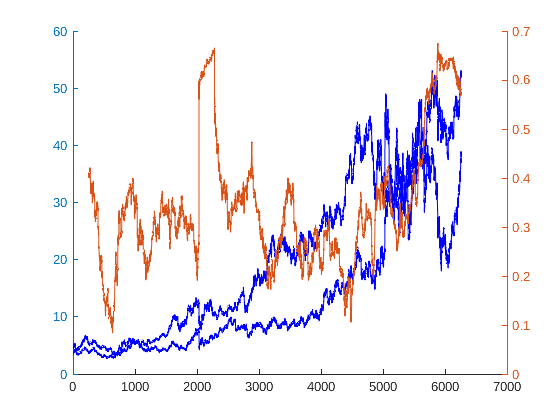
Razliciti T-ovi
figure, hold on for T = [50, 150, 250, 500] roll = rolling_corr(r1, r2, T); plot([nan(T - 1, 1); roll]) end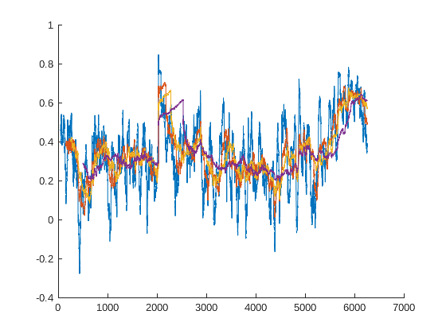
Najveća korelacija u nekom trenutku
T = 500; t = 3124; corrs = zeros(N, N); sp500_returns_frame = sp500_returns(t : t + T - 1, :); for i = 1 : N for j = i + 1 : N corrs(i, j) = corr(sp500_returns_frame(:, i), sp500_returns_frame(:, j)); corrs(j, i) = corrs(i, j); end end imagesc(corrs) colormap jet colorbar clear sp500_returns_frame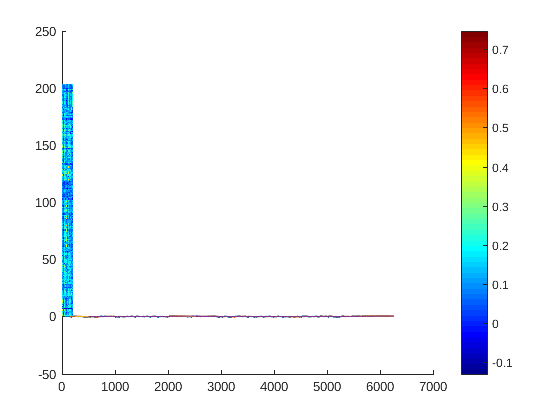
Podskup podataka
prices = sp500(1600 : 2500, :); rets = price2ret(prices); [L, ~] = size(rets); T = 500;
Korelacije na podskupu
corrs = nan(L - T + 1, N, N); parfor i = 1 : N fprintf('\b.\n'); corrs_t = nan(L - T + 1, N); for j = i + 1 : N corrs_t(:, j) = rolling_corr(rets(:, i), rets(:, j), T); end corrs(:, i, :) = corrs_t; end
Simetrična matrica s jedinicama na dijagonali (nije potrebno)
for i = 1 : N corrs(:, i, i) = 1; for j = i + 1 : N corrs(:, j, i) = corrs(:, i, j); end end
Najbolji ostaju
nanmeans = nanmean(nanmean(permute(corrs, [3, 2, 1]))); counts = sum(sum(permute(corrs, [3, 2, 1]) > 1.7 * nanmeans)); [bestI, bestJ] = find(permute(corrs, [3, 2, 1]) > 1.7 * nanmeans);
Korelacije nad čitavim skupom (puno brži algoritam)
T = 500; L = days - 1; corrs = nan(L - T + 1, N, N); fprintf(['\n', repmat('.', 1, N), '\n\n']); parfor i = 1 : N corrs_t = nan(L - T + 1, N); for j = i + 1 : N corrs_t(:, j) = rolling_corr(sp500_returns(:, i), sp500_returns(:, j), T); end corrs(:, i, :) = corrs_t; fprintf('\b#\n'); end
........................................................................................................................................................................................................... ###########################################################################################################################################################################################################
Najbolji ostaju
nanmeans = nanmean(nanmean(permute(corrs, [3, 2, 1]))); maxes = max(max(permute(corrs, [3, 2, 1]))); counts = sum(sum(permute(corrs, [3, 2, 1]) > nanmeans)); figure, hold on yyaxis left, plot(nanmeans(:)), plot(maxes(:)) yyaxis right, plot(counts(:)) legend means maximums counts Location best clear corrs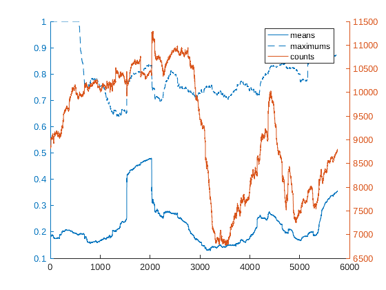
Korelacije nad logaritmima cijene
T = 500; L = days; corrs_logprice = nan(L - T + 1, N, N); fprintf(['\n', repmat('.', 1, N), '\n\n']); tic parfor i = 1 : N corrs_t = nan(L - T + 1, N); for j = i + 1 : N corrs_t(:, j) = rolling_corr(sp500_logprice(:, i), sp500_logprice(:, j), T); end corrs_logprice(:, i, :) = corrs_t; fprintf('\b#\n'); end toc
........................................................................................................................................................................................................... ########################################################################################################################################################################################################### Elapsed time is 66.763646 seconds.
Najbolji ostaju
nanmeans = nanmean(nanmean(permute(corrs_logprice, [3, 2, 1]))); maxes = max(max(permute(corrs_logprice, [3, 2, 1]))); counts = sum(sum(permute(corrs_logprice, [3, 2, 1]) > nanmeans)); figure, hold on yyaxis left, plot(nanmeans(:)), plot(maxes(:)) yyaxis right, plot(counts(:)) legend means maximums counts Location best clear corrs_logprice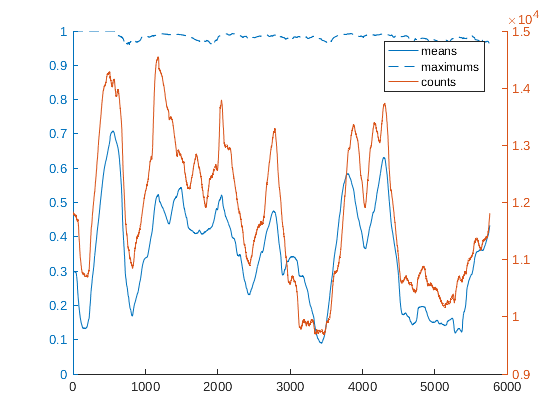
Korelacije nad razlikama logaritama cijene
T = 500; L = days - 1; corrs_logprice_diff = nan(L - T + 1, N, N); fprintf(['\n', repmat('.', 1, N), '\n\n']); tic parfor i = 1 : N corrs_t = nan(L - T + 1, N); for j = i + 1 : N corrs_t(:, j) = rolling_corr(sp500_logprice_diff(:, i), sp500_logprice_diff(:, j), T); end corrs_logprice_diff(:, i, :) = corrs_t; fprintf('\b#\n'); end toc
........................................................................................................................................................................................................... ########################################################################################################################################################################################################### Elapsed time is 61.978078 seconds.
Najbolji ostaju
nanmeans = nanmean(nanmean(permute(corrs_logprice_diff, [3, 2, 1]))); maxes = max(max(permute(corrs_logprice_diff, [3, 2, 1]))); counts = sum(sum(permute(corrs_logprice_diff, [3, 2, 1]) > nanmeans)); figure, hold on yyaxis left, plot(nanmeans(:)), plot(maxes(:)) yyaxis right, plot(counts(:)) legend means maximums counts Location best clear corrs_logprice_diff
Minimizacija kvadrata razlike logaritma cijene
T = 500; L = days; squared_logprice_diff = nan(L, N, N); fprintf(['\n', repmat('.', 1, N), '\n\n']); tic parfor i = 1 : N squares_t = nan(L, N); for j = i + 1 : N squares_t(:, j) = (sp500_logprice(:, i) - sp500_logprice(:, j)) .^ 2; end squared_logprice_diff(:, i, :) = squares_t; fprintf('\b#\n'); end toc accum_squared_logprice_diff = movsum(squared_logprice_diff, T); clear squared_logprice_diff
........................................................................................................................................................................................................... ########################################################################################################################################################################################################### Elapsed time is 26.217057 seconds.
Najbolji ostaju
nanmeans = nanmean(nanmean(permute(accum_squared_logprice_diff, [3, 2, 1]))); mins = min(min(permute(accum_squared_logprice_diff, [3, 2, 1]))); counts = sum(sum(permute(accum_squared_logprice_diff, [3, 2, 1]) > nanmeans)); figure, hold on yyaxis left, plot(nanmeans(:)), plot(mins(:)) yyaxis right, plot(counts(:)) legend means minimums counts Location best figure, plot(mins(:)) legend minimums Location best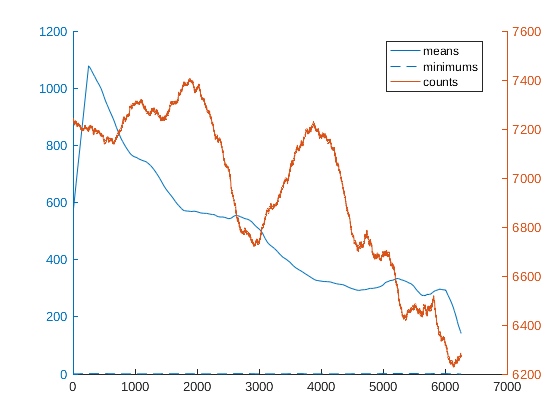 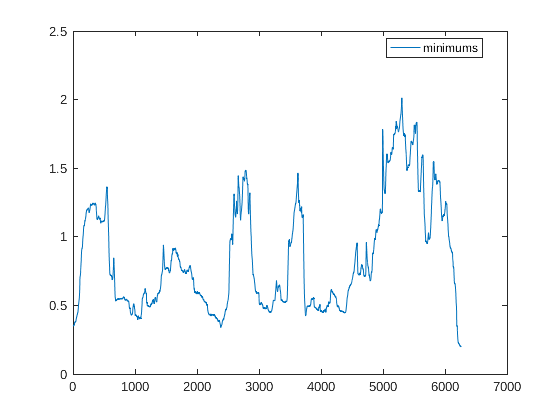
Prikaz akumuliranih kvadrata razlike logaritma cijene u jednom trenutku
figure, imagesc(squeeze(accum_squared_logprice_diff(4800, :, :)), [0, 10]), colormap jet; colorbar
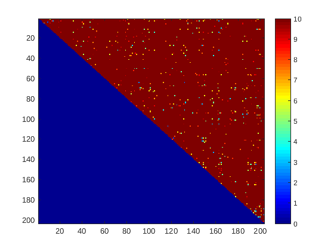 Parovi s najmanjom razlikom
[xs, ys] = argmin(accum_squared_logprice_diff); % Najmanja razlika koja najdulje traje je na intervalu 1700 - 2400 za par % (190, 196). figure, yyaxis left, plot(xs * 203 + ys), yyaxis right, plot(mins(:))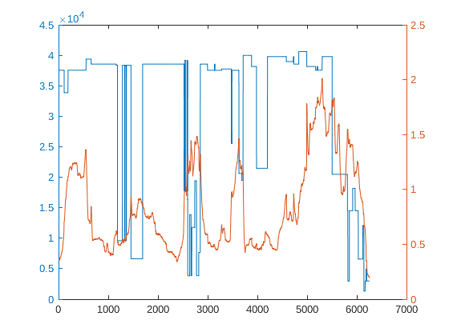
Dvije dionice koje se najdulje vrijeme najsličnije ponašaju
figure, hold on, plot(sp500(1700 - T : 2400 - T, 190)), plot(sp500(1700 - T : 2400 - T, 196)) legend 190 196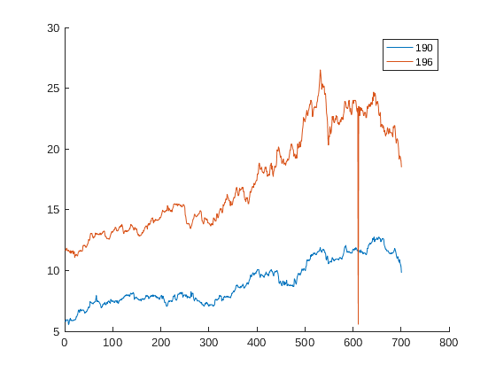
Statistička arbitraža na tom intervalu
begin = 1700; finish = 2400; deltas = sp500_logprice(begin - T : finish, 190) - sp500_logprice(begin - T : finish, 196); averages = movmean(deltas, T, 'Endpoint', 'discard'); stddevs = movstd(deltas, T, 'Endpoint', 'discard'); ds = [2, 1.8, 1.6, 1.3, 1]; for d = ds decisions = zeros(finish - begin + 1, 1); profit = zeros(finish - begin + 1, 1); for t = 1 : finish - begin if deltas(t + T) > averages(t) + d * stddevs(t) decisions(t) = 1; profit(t + 1) = profit(t) + deltas(t + T) - deltas(t + T + 1); elseif deltas(t + T) < averages(t) - d * stddevs(t) decisions(t) = -1; profit(t + 1) = profit(t) - deltas(t + T) + deltas(t + T + 1); else profit(t + 1) = profit(t); end end figure, yyaxis left, plot(decisions) yyaxis right, plot(profit(2 : end)) title(sprintf('d=%.1f', d)) end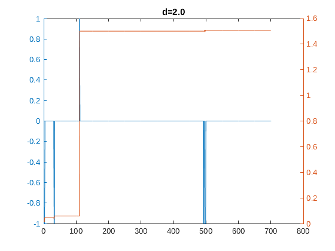 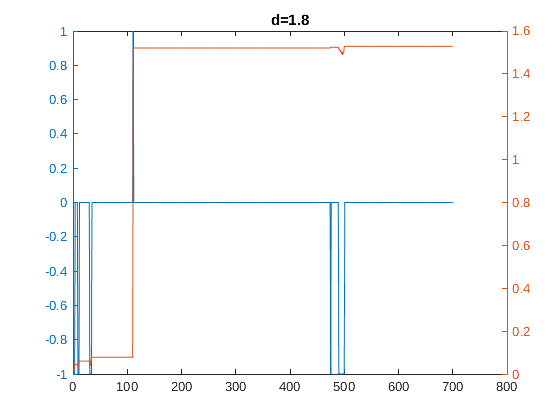 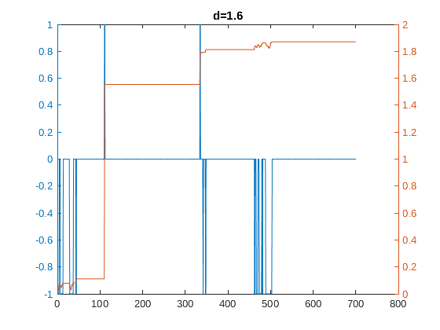 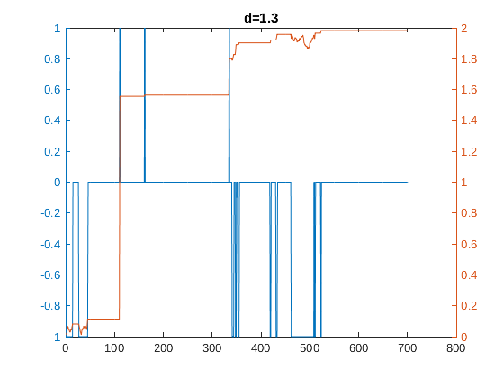 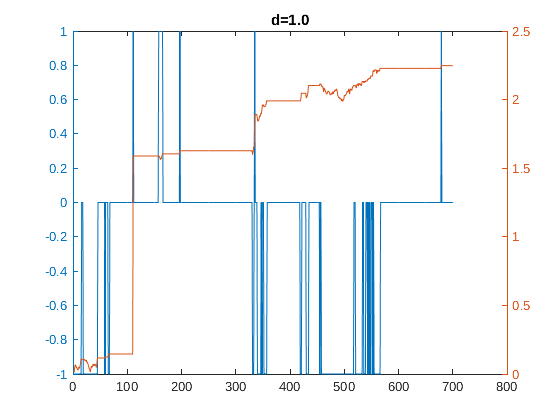